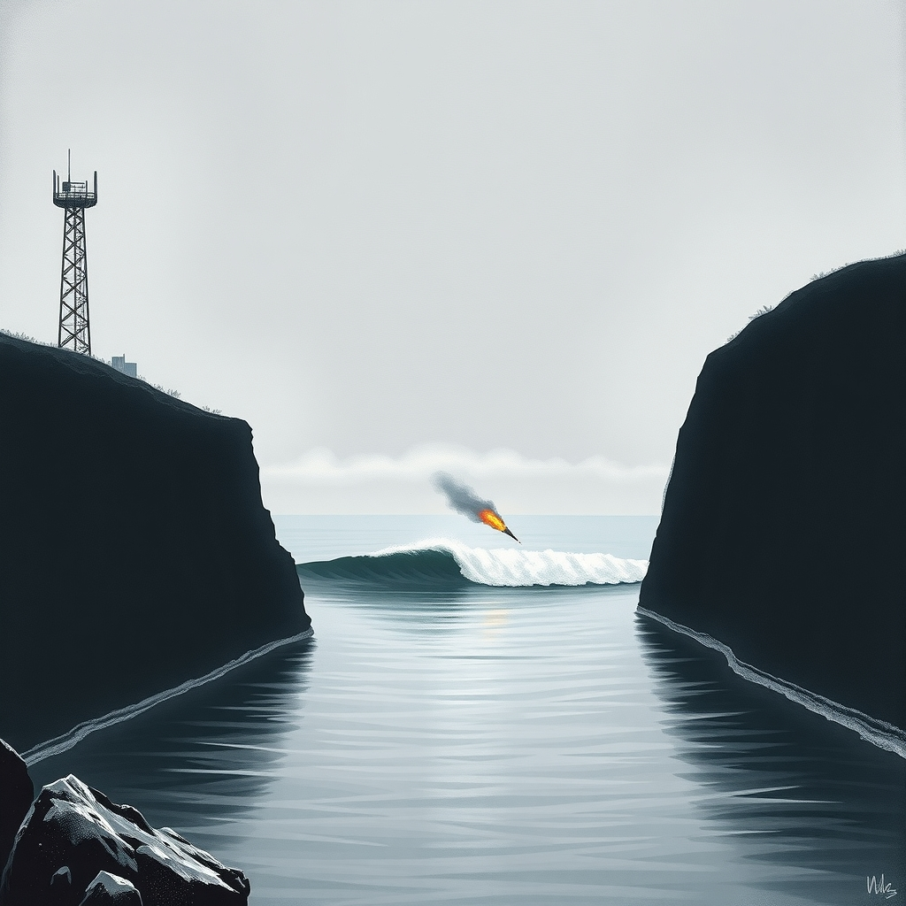
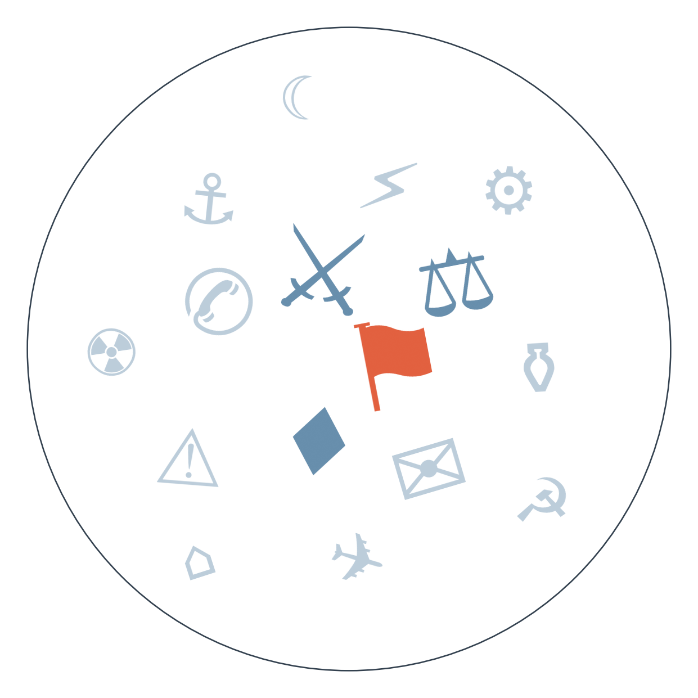

Ранковий бріф · огляд світової преси

У Саксонії-Анхальт АфД встановила історичний рекорд — понад 44% голосів, найкращий результат ультраправих в об'єднаній Німеччині, хоча абсолютної більшості партія не набрала. ХДС Мерца програв, і тепер головне питання не в цьому, а в тому, чи витримає берлінська коаліція серію вересневих виборів у Берліні й Мекленбурзі-Передній Померанії, які йдуть слідом. Радикалізація сходу Німеччини триває вже кілька тижнів.
Віткофф і Кушнер завершили перший офіційний візит до Києва одразу після переговорів у Москві, але, за даними Euractiv, проривів не привезли — лише «ефективніші пропозиції». Зеленський після зустрічі прямо сказав, що очікує продовження війни до зими, а телеканал N1 передав ще одну його фразу — гарантії США для нього «кращі за системи Patriot»; дипломатичні спроби завершення війни тривають уже понад тиждень.
У Маямі вантажний Boeing 767 компанії Amazon Prime Air вилетів за межі злітно-посадкової смуги, врізався в автомобілі й загорівся — щонайменше п'ять людей загинули, ще п'ять постраждали. Літаку 32 роки, і катастрофа одразу поставила питання про контроль Amazon над підрядниками, які перевозять вантажі для компанії.

Перемога АфД у Саксонії-Анхальт
Замовчують: жодне з наведених видань сьогодні не згадує економічний контекст — скорочення 50 тисяч робочих місць у Volkswagen, оголошене напередодні виборів у тому ж регіоні; тема, ще тиждень тому названа ключовою причиною радикалізації, сьогодні випала з рамки.
Чому розходяться: австрійські ліві бачать у перемозі АфД загрозу демократичним нормам і особисту поразку Мерца, тому педалюють емоційний реєстр; австрійські праві натомість показують кризу як інституційну, а не ідеологічну, і що попереду ще випробування; американський Axios переносить історію на власну територію, бо для читача в США важливіше «чи працюють запобіжники», ніж деталі саксонської коаліційної математики; чеські медіа дивляться на подію через призму власної безпеки — Німеччина сусід і головний торговий партнер, тому їх цікавить стабільність Берліна, а не землі; польська преса й прем'єр сприймають перемогу АфД як пряму загрозу власній безпеці, тому реагують гостріше, ніж аналітики сусідніх країн.
Ескалація в Ормузькій протоці
Замовчують: державне іранське агентство IRNA сьогодні взагалі не згадує ескалацію — усі заголовки про внутрішню інфраструктуру й культуру.
Чому розходяться: опозиційне видання прагне підважити легітимність режиму, тому обирає найзагрозливішу рамку; реформістська преса обмежена цензурою і воліє говорити мовою економіки; ізраїльське видання просуває образ США як тих, хто контролює ситуацію мілітарно; саудівське видання дбає передусім про стабільність власного нафтового транзиту.
Серпень (пам'ять): Volkswagen підтверджує скорочення 50 тисяч робочих місць на своїх заводах у Німеччині → цього тижня: АфД перемагає вибори у Саксонії-Анхальт з понад 44% голосів, ХДС Мерца програє → вересень (за Die Presse): попереду вибори в Берліні й Мекленбурзі-Передній Померанії, а в Тюрингії уряд і так хитається → веде до питання, чи переживе канцлерство Мерца цю осінь у теперішньому вигляді.
Кінець серпня (пам'ять): Хорватія погрожує заблокувати вступ Сербії до ЄС через державні почесті Ратку Младичу → сьогодні: боснійський політик Ляїч демонстративно залишає ложу на футбольному матчі, дізнавшись про вшанування засудженого воєнного злочинця, сербські видання фіксують розкол реакцій → 10 вересня (за календарем): очікується офіційна церемонія похорону, і перемовини про вступ Сербії до ЄС залишаються напруженими; окремим порядком 17 вересня заплановане голосування ЄС про продовження санкцій проти Росії.
Минулий тиждень (пам'ять): несподівано сильні дані по зайнятості в США зміцнюють аргументи за підвищення ставки ФРС, тоді як Трамп публічно тисне за зниження → сьогодні: загострення навколо Ормузької протоки жене нафтові ціни вгору, індійські біржі Sensex і Nifty падають на цьому тлі → 12 вересня: засідання FOMC ухвалює рішення вже в умовах подвійного тиску — інфляційного через нафту й політичного через Трампа → веде до питання, чи наважиться Федрезерв підняти ставку саме в момент, коли Білий дім вимагає протилежного.
Нафта пішла вгору на тлі ескалації в Ормузькій протоці, індійські індекси Sensex і Nifty впали ще до відкриття європейських торгів.
Дані з ринку праці США тримають в силі аргумент за підвищення ставки ФРС 12 вересня, попри публічний тиск Трампа за протилежний курс.
За заявою Рособоронекспорту, компанія уклала контракти на понад 13 млрд доларів за півроку — оборонний експорт Росії залишається стабільним попри санкції.
В Аргентині роздрібні продажі малого й середнього бізнесу впали ще на 2,4% з початку року — споживання не відновлюється попри спроби здешевити іпотечні кредити.
Bild перетворює історичну перемогу ультраправих на особисту драму: «Виборчий землетрус — сьогодні день болю» і репортаж про «дику вечірку перемоги АфД», тоді як серйозна преса того ж дня рахує мандати для коаліції.
Fakt у день, коли вся якісна польська преса обговорює АфД і майбутнє ЄС, пропонує читачам історію про немолодого чоловіка, замкненого в біотуалеті на святі виноробів, і трирічну дитину за кермом Audi — жодного натяку на Німеччину.
Times Now в одному списку заголовків ставить поруч падіння індексів через ескалацію Ірану і коштовності Ніти Амбані — для масового індійського читача геополітика й гламур живуть на одній стрічці.
Візит Віткоффа й Кушнера завершився без прориву, а Зеленський прямо каже про війну «до зими» — це означає, що українській енергосистемі й бюджету варто готуватися до ще однієї зимової кампанії ударів без гарантованого політичного фіналу.
ВАКС відправив під варту чиновника ОГП Кропиву з альтернативою застави 120 млн грн у справі «Карфаген» — перше конкретне процесуальне рішення після серії обшуків у прокуратурі, другий за тиждень сигнал незалежності антикорупційних органів; для партнерів, які тримають розблокування кредитів у прив'язці до реформ юстиції, це конкретний, а не риторичний аргумент.
Перемога АфД у Саксонії-Анхальт і хиткість коаліції Мерца — ризик для довгострокової німецької підтримки України, оскільки партія відкрито виступає проти постачань зброї, а федеральний уряд входить в осінь виборів під тиском.
Державне іранське агентство IRNA сьогодні не публікує жодного матеріалу про ескалацію в Ормузькій протоці чи атаку на американський безпілотний човен — мовчить саме офіційний державний рупор, тоді як опозиційне Iran International і реформістський Shargh пишуть про це відкрито; причина в тому, що конфронтаційна риторика важлива для внутрішньої аудиторії лише в дозованому вигляді.
Пошуки зниклих після зсуву в Гьїронгу тривають без офіційної статистики жертв уже понад тиждень — мовчить китайська влада централізовано, тема витіснена іншим порядком денним, а іноземні кореспонденти не мають доступу в регіон, щоб перевірити цифри самостійно.
Тема скорочення 50 тисяч робочих місць у Volkswagen, ще тиждень тому названа головною причиною радикалізації сходу Німеччини, сьогодні повністю зникла з коментарів про перемогу АфД — мовчать практично всі якісні видання одночасно, бо гучніша розповідь про «історичну перемогу» витіснила складнішу економічну.
Середня впевненість: Кім Чен Ин ввів у стрій другий ядерний есмінець саме в день початку навчань США-Південна Корея-Японія — можливий сигнал підготовки до відповіді на розширення тристоронніх навчань найближчими тижнями. На чому ґрунтується: збіжні повідомлення SCMP, The Hindu, Japan Times і державного KBS.
Низька впевненість, одне джерело: Israel Hayom стверджує, що ВМС США проводили таємну операцію морських котиків з розмінування Ормузької протоки останні кілька місяців — може означати підготовку до тривалішої військової присутності в регіоні, ніж визнається офіційно. На чому ґрунтується: одне ізраїльське видання з посиланням на Financial Times.
Середня впевненість: Іран анонсує підписання угоди про новий коридор судноплавства через Ормуз «найближчими днями» одночасно з погрозами «більш болючої відповіді» — можливий сигнал спроби деескалації економічної частини конфлікту при збереженні військової риторики. На чому ґрунтується: збіжні повідомлення Al Jazeera, Al Arabiya, Gulf News й Economic Times з посиланням на іранських посадовців.
Наші:
Мерц зіткнеться з публічною вимогою перегляду лідерства всередині ХДС до 21.09.2026
Іран офіційно оприлюднить межі «забороненої зони» в Ормузькій протоці до 14.09.2026
Попередній звіт NTSB/FAA щодо причин катастрофи вантажного Boeing 767 в Маямі з'явиться до 21.09.2026
Рахунок: 1 з 5 (базово 1 з 4) — сьогодні прогноз про санкції Німеччини щодо консульства РФ у Бонні (горизонт 05.09) не справдився: дайджест згадує лише повідомлення Bild про розвідувальну діяльність, без анонсу санкцій; інші активні прогнози горизонту сьогодні не досягли.
Решта активних прогнозів:
Демократи Палати представників внесуть законопроект проти перейменування Lake Ontario — горизонт 08.09,
Сербія проведе державний похорон Младича з військовими почестями — горизонт 10.09, (сьогоднішні реакції в Сербії й Боснії — складова цього сюжету, горизонт ще не настав)
ФРС підвищить ставку на засіданні FOMC — горизонт 12.09,
США та Іран проведуть ще один прямий обмін ударами — горизонт 16.09,
Тристоронній саміт Путін-Трамп-Зеленський не відбудеться — горизонт 16.09,
ЄС ухвалить продовження санкцій проти Росії попри блокаду Словаччини — горизонт 17.09,
Саудівська Аравія офіційно звернеться до Ради Безпеки ООН щодо удару по своєму танкеру — горизонт 10.09,
Уряд Естонії оголосить кадрові чи процедурні зміни в оборонному відомстві — горизонт 17.09,
IG Metall організує масштабні протести проти скорочень у Volkswagen — горизонт 18.09,
Конгрес США відкриє слухання щодо удару по весіллю в Ірані — горизонт 18.09,
Південна Корея ухвалить рішення про розгортання активів у Ормузькій протоці — горизонт 18.09,
Малі партії в Саксонії-Анхальт заблокують АфД від формування уряду — горизонт 20.09, (сьогоднішній результат виборів підтверджує передумову: АфД перемогла, але без більшості)
Німеччина оголосить конкретні заходи щодо консульства РФ у Бонні — горизонт 19.09,
Справа «Карфаген» призведе до затримання чи відставки посадовця рівня заступника генпрокурора — горизонт 19.09, (сьогодні під варту відправлено співробітника ОГП Кропиву — рівень поки нижчий, прогноз лишається відкритим)
Кажуть інші:
Володимир Зеленський (за BBC): очікує, що війна триватиме до зими — горизонт орієнтовно грудень 2026.
Володимир Зеленський (за Index.hr): США збільшать виробництво ракет Patriot у 2027 році — горизонт 2027.
Наближений до Трампа посадовець (за Digi24): ядерна угода з Іраном неможлива, «доведеться знищити їхні потужності» — горизонт не вказано.
Колишній очільник Пентагону (за Klix): війна Трампа з Іраном перетворюється на «новий Афганістан» — горизонт не вказано.
Базова лінія у прогнозах. Відсоток «базово» — це ймовірність події за інерцією, якщо ніхто нічого не робитиме й нічого не зміниться. Друге число — наша впевненість. Прогноз має сенс лише тоді, коли ці числа розходяться: збіг означає, що ми просто описали поточний стан.
Відсотки в карті уваги. Частка країни в денному обсязі зібраних матеріалів. Не показник важливості події, а показник того, скільки місця країна зайняла в новинному потоці за добу. Різкий стрибок частки зазвичай означає, що в країні щось відбувається.
Стрічки, які не відповіли. Не відповіли (5): Caixin, Corriere della Sera, Il Foglio, Milenio, Liga.net.